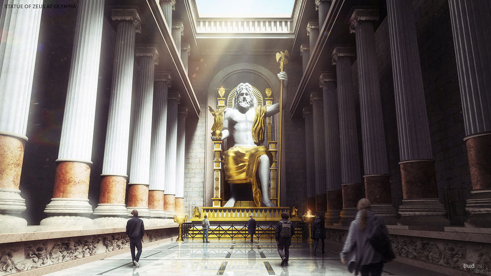

Dzeuso skulptura Olimpijoje buvo vienas iš Septyniu pasaulio stebuklu. Olimpija Senoves Graikijoje buvo svarbus religinis centras, kuriame daugiausiai garbinamas dievas buvo Dzeusas. Siame mieste buvo rengiamos ir olimpines zaidynes, sventes ir atletikos varzybos.V a. pr. m. e. Olimpijos gyventojai Dzeuso garbei nusprende pastatyti sventykla, kuri iskilo 466–456 m. pr. m. e. Ji buvo pastatyta is masyvis akmens luitu ir supama kolonu. Šventykla neturejo dievo skulpturos, todel jai sukurti buvo isrinktas Fidijas (Feidijas), zinomas Atenu skulptorius. Anksciau jis buvo sukures dvi Atenes statulas. Dzeuso statula stovejo sventykloje, kurios ilgis sieke sesiasdesimt keturis metrus, plotis - dvidesimt astuonis, vidine patalpa buvo dvidesimt metrų aukscio. Sales gale soste sedintis Dzeusas galva reme lubas. Iki juosmens apnuogintas Dzeusas buvo padarytas is medzio, jo „oda“ - is dramblio kaulo plokscių, o drabuziai – is aukso lakstų. Dievas sedejo soste, inkrustuotame juodmedziu ir brangakmeniais. Vienoje rankoje jis laikė auksine pergales deives Nikes skulptura, kita remesi ilgu skeptru. Statinys buvo apsuptas daugiau nei dvieju metrų storio kolonu. Sosto sonus buvo istapes dailininkas Panenas, Fidijo giminaitis ir padejejas. Dzeusas buves toks didingas, kad Fidijas, baiges darba priejo prie statulos ir paklause: - Ar tu patenkintas, Dzeusai? Pasigirdo perkuno trenksmas, ir grindys prie statulos koju iskilo. Skulptura buvo pabaigta apie 435 m. pr. m. e.Skaitykite daugiau
